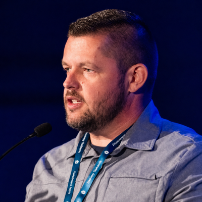

Senior Threat Intelligence Advisor with Team Cymru
Eli Woodward is a cyber threat intelligence advisor with Team Cymru. He's worked in a variety of industries including financial services and government, and has seen the range of organizations from extremely well-resourced and capable to the shoestring budget. This has given him unique insights into CTI at all levels of complexity, maturity, and resources. He holds a master's degree in Intelligence and Security Studies and also plays bagpipes competitively.
10:00-10:30 PDT | Saturday, Aug 8th 2026 | DEF CON Creator Stage 3, Las Vegas Convention Center Talk
This talk examines how exposed AI infrastructure is becoming a new adversary playground, as attackers and internet-scale scanners and bruteforcing target LLM gateways, MCP servers, local inference APIs, and AI developer tooling faster than defenders have built threat models for them.
I ran a purpose-built AI honeypot that simulated 16 LLM and AI infrastructure personas across 16 ports, returning framework-authentic responses, headers, errors, and protocol behaviors. In one 48 hour window, the system captured 3,993 requests from 327 unique source IPs, including 155 MCP probes and 344 AI API key probes. What emerged was not generic internet noise, but a repeatable playbook against the emerging AI stack: LiteLLM model-registration abuse, MCP resource enumeration, framework-aware credential brute forcing, and coordinated scanning for exposed local inference services.
I. LiteLLM Proxy Poisoning - A New Kind of AI Infrastructure Abuse (8 min)
Discovery: model enumeration, model registration attempts, key-generation probing, and chat completion requests routed through an attacker-defined model
Technique: registering a backend with an attacker-controlled api_base, turning future inference traffic into outbound server-side traffic from the LiteLLM host
Why it matters: this is not memory corruption or a traditional exploit, but abuse of exposed or weakly protected AI management functionality
Purple-team takeaway: model registration, backend routing, gateway routes, and inference proxy behavior need to be modeled in offensive testing
II. MCP Enumeration - Why Agent Protocols Change the Recon Model (5 min)
Observed MCP activity shows how agent infrastructure is already being enumerated at the protocol level.
Workflow: initialize, initialized notification, tools/list, resources/list, resources/read, and prompts/list
Sensitive probing: attempts to read file:///etc/passwd, file:///etc/hosts, file:///root/.env, db://internal/customers, and db://internal/llm_sessions
Why it matters: exposed MCP servers may reveal tools, prompts, files, databases, and internal resources depending on implementation
Tradecraft implication: MCP enumeration is already automated, whether by scanners, recon platforms, or hostile infrastructure
III. Framework-Aware AI Infrastructure Attacks - What It Means (5 min)
Attackers are not just guessing generic API paths; they are targeting AI frameworks with implementation-specific knowledge.
Observed targeting: LiteLLM-specific routes such as /anthropic/v1/models and /proxy/anthropic/v1/models
Credential patterns: sk-litellm-master-key, sk-litellm-proxy, sk-admin, sk-prod, sk-dev, sk-token, and sk-secret
Why it stands out: the paths and wordlists suggest knowledge of framework internals, leaked deployments, source code, or prior compromises
Simulation takeaway: AI infrastructure brute forcing should include framework-specific routes, defaults, and AI-native credential patterns
IV. Attack Timeline and Walkthrough (5 min)
Using captured requests to reconstruct how attackers and scanners approach exposed AI infrastructure.
Honeypot architecture: a global network of cloud nodes simulating 16 AI and LLM personas across 16 ports
Capture methodology: full request/response pairs, session correlation, enriched metadata, and central aggregation
Walkthrough: LiteLLM sequence from model enumeration through attempted registration and chat completion routing
Walkthrough: MCP sequence from resource discovery through sensitive URI access attempts
V. Local Inference Case Study: LM Studio, Ollama, and Developer Machine Exposure (3 min)
A case study in the gap between local AI tooling assumptions and real internet exposure.
Observed activity: coordinated scanning against LM Studio's default port 1234 from related network ranges
Why it matters: local inference tools are often built for developer convenience, not internet-facing resilience
Exposure pattern: predictable ports and OpenAI-compatible API behavior make local AI services discoverable
Broader implication: adversaries do not need to compromise the model if they can reach the API wrapper, gateway, or local inference server around it
VI. Operationalizing This for Purple Teams (2 min)
Closing with concrete detections, emulation ideas, and a tool release.
Detection opportunities: exposed LiteLLM management routes, unexpected /model/new calls, suspicious api_base values, MCP resources/read attempts, AI-specific credential dictionaries, and default inference port scans
Emulation opportunities: model registration abuse, MCP enumeration, local inference exposure, framework-aware credential probing, and AI gateway misconfiguration
Tool release: share the honeypot framework and capture methodology so defenders can measure what their own exposed AI attack surface attracts
Final takeaway: attackers and internet-scale scanners are already adapting to the AI stack; purple teams need to model what is actually happening, not what AI security slideware says might happen someday
Agency.
Join Adversary Village official Discord server to connect with our amazing community of adversary simulation experts and offensive security researchers!